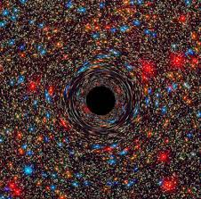
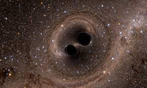

Título Sexagenário
Os dados suspeitos da galáxia KIC 11606854, apelidada de “Spikey”, foram detectados pelo telescópio Kepler em 2011 e encontrados alguns anos mais tarde. Essas detecções mostraram um centro galáctico ativo (AGN) incomum, com um pico de brilho estranho. Os AGN são núcleos de galáxias emissores de radiação intensa. Astrônomos consideram que um AGN é formado quando, no centro da galáxia, há um buraco negro supermassivo ativo, isto é, se alimentando de matéria. No processo de alimentação, o buraco negro acumula plasma na forma de discos de acreção e jatos relativísticos. O AGN pode ser mais brilhante do que a própria galáxia que o hospeda. No caso da Spikey, o pico de brilho incomum em 2011 sugeria algo ainda mais fantástico: um processo de fusão entre dois buracos negros supermassivos. Mas há uma condição para que as observações correspondam a essa hipótese — os dois buracos negros devem estar alinhados em relação à Terra, de modo que o telescópio Kepler possa registrar o momento de ocultação.
Mais informaçõesTítulo Sexagenário
Enquanto o AGN em Spikey ainda é considerado apenas um “candidato” a dupla de buracos negros supermassivos em processo de fusão, os cientistas estão tentando simular o processo para ver se a previsão dos modelos de computador correspondem à realidade, isto é, aos dados reais observados anteriormente. Acontece que Jordy Davelaar e Zoltán Haiman, autores da pesquisa, encontraram algumas surpresas na simulação. Eles descobriram que, após o pico de aumento de brilho, o ocultamento e a lente gravitacional da dupla de buracos negros causa também uma curiosa queda no brilho.
Mains informaçõesTítulo Sexagenário